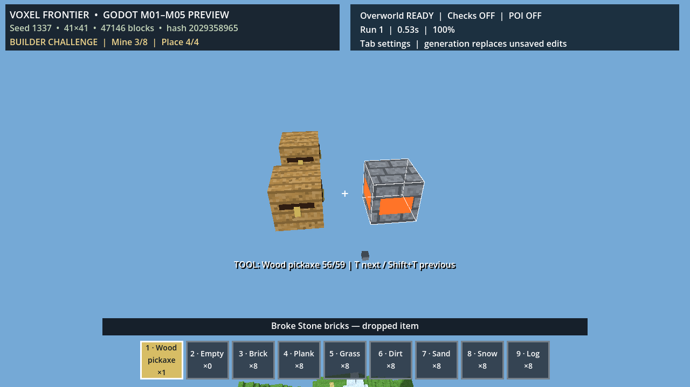

완료 범위
- 36슬롯·4장비·14개 제작, 상자 27칸과 최대 128개 스테이션
- 화로 20Hz: 철 원석 200틱, 석탄 1,600틱
- 광석 고갈과 화로 틱을 저장 v7에 보존
- 61단계 종료 0, 스테이션 2,565/2,584, 제작 2,683/2,695 단언
게임 플레이 증거

상자·화로와 물리 드롭 피드백이 보이는 실제 렌더 캡처.
다음 연결
M06 화톳불은 M05의 틱·저장 계약을 재사용하되 포맷 v8과 회복 반경을 별도 명시합니다.